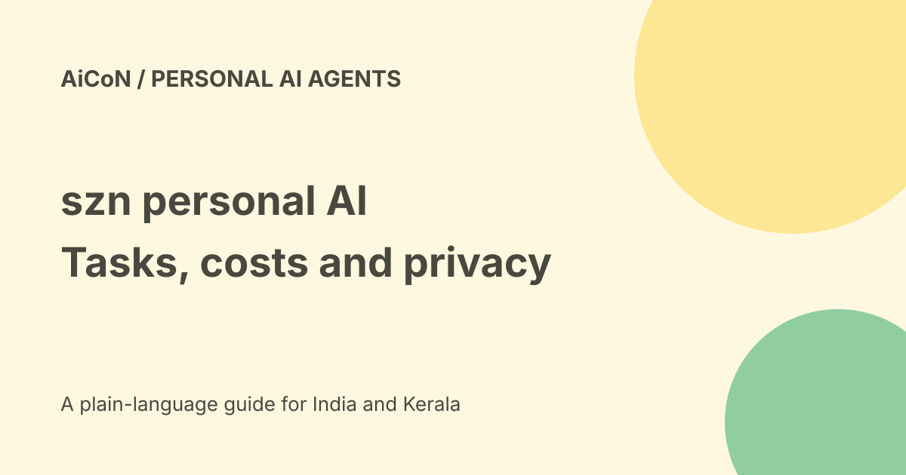

szn: task-taking AI, costs, privacy and a cautious first try
szn describes a personal AI service that receives messages and handles tasks such as calls, emails and follow-ups. Its website promises that users return for decisions while the service handles the rest. Those are product claims, not a hands-on test of every task or country.

What the service describes
The public homepage says requests can arrive as text, voice notes, photos or forwarded emails. Examples include travel planning, calendars, phone calls, group plans and follow-ups.
This differs from a chatbot that only writes a suggestion. A task-taking service can contact a business, change a record or create a booking. That makes the limits you give it important.
Start with a low-stakes task
- Read the current product page, privacy policy and acceptable-use policy.
- Check actual account access and pricing before connecting anything.
- Choose a small research or planning task that needs no purchase or private account.
- State the desired result, relevant details and what the service must not do.
- Ask it to stop for review before sending, booking or paying.
- Inspect the final facts, links and actual outcome.
- Only then consider a narrowly scoped account connection.
- Remove unnecessary access when it no longer serves the task.
These are editorial safety steps, not a claim that every version exposes the same buttons or review controls. We did not create an account, place a call or connect an inbox.
Authority is more than a task description
The acceptable-use policy says the service can create real-world effects, including calls, emails, bookings and purchases. It says users are responsible for submitted tasks and should request only actions they are authorised to ask for.
Describe the person or business, purpose and allowed scope. Do not assume that a request to research a trip also authorises paying for it. Other people's accounts and information need their permission, too.
Free, paid and India
The checked public pages do not establish a complete public subscription price, INR offer or universal free allowance. The use policy refers to token consumption and costs from executed tasks. It also permits usage limits such as concurrent-task and browser-session caps.
That means this guide does not call it unlimited or free. Before a trial, check subscription charges, task costs, refund conditions and what remains payable if an errand fails. A business purchase is a separate cost from the AI service.
The homepage says it has worked across 16 countries. That does not confirm India support, local payment rails, Malayalam calls or every Indian merchant. We did not test those things.
Connected Google accounts
The privacy policy says that, with authorisation, Google access can include Gmail and Calendar data for requested tasks. Its calendar examples include reading, creating and changing events.
Read the permission screen. Give only the access needed for your trial, and know how to revoke it. A connected account contains information about other people as well as yourself.
What happens to task information?
The policy says relevant information may be shared with businesses involved in a task and with third-party AI providers for processing. It also describes infrastructure providers and authorised support access.
The service says Google data is not used for advertising and that sensitive vault credentials are not shared with AI providers. These are policy statements, not an independent security audit. They do not mean every task detail stays on your device.
The policy says the service operates from the United States and information may be processed there or elsewhere. Its retention section keeps task data until deleted by the user or account, with legal exceptions and a reasonable-timeframe account-deletion process.
Credentials and private requests
The policy describes optional encrypted stored credentials and deletion controls. Before storing anything, read the actual account controls and consider whether the task needs that access at all.
For a first test, do not submit passwords, financial secrets, health records or private correspondence. Verify who will receive an outgoing message or booking detail before approving it.
What changed since the original post?
We retain the vendor's task-taking description but do not claim a launch date or founder biography without current supporting evidence. We add account-data sharing, US processing, charges and task-authority limits. The 16-country claim is not treated as proof of India availability.
Frequently asked questions
Is it only a writing chatbot?
The vendor describes real task execution, including calls and email.
Is it definitely free?
No complete universal free offer was verified.
Does private mean offline?
No. The policy describes cloud processing and sharing needed for tasks.
Was it tested in India?
No account or India task was tested for this guide.
Sources: Official homepage · Official product page · Public privacy policy · Public acceptable-use policy. Checked 7 October 2026.